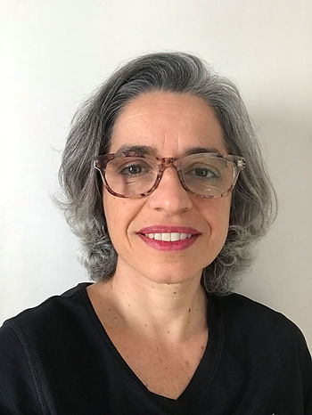
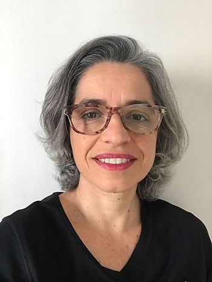

Meu nome é Luciana Ferreira Angelo, sou psicóloga (PUC-SP), Mestre em Educação e Doutora em Ciências (USP). Coordeno o curso EAD “Conhecendo a Psicologia do Esporte” pelo Instituto Sedes Sapientiae e o curso semipresencial “Aprimoramento e Especialização em Psicologia do Esporte” pelo Instituto Sedes Sapientiae.
Meu trabalho com Psicologia do Esporte teve início na década de 1990, quando ainda na graduação, fiz parte de um grupo de alunos que buscando promover autonomia à população de prostitutas de baixo meretrício do bairro do Brás, em São Paulo, constituímos a Associação Piracema (com apoio financeiro da Caritas) desenvolvendo programas de educação à saúde e alfabetização adulta por meio de oficinas de artes, expressão corporal, atividades de lazer (dentre elas jogos e esporte) e assessoria jurídica. Nosso objetivo era oferecer espaços de reflexão e organização de projetos pessoais que, em alguns casos, alteraram a vida não só das mulheres e travestis, mas também das suas famílias e de seus clientes.
Ao mesmo tempo, no estágio que realizava na Eletropaulo Eletricidade de São Paulo e, depois como funcionária contratada, desenvolvi programas relacionados à orientação e tratamento de dependentes químicos, acompanhamento do estágio dos menores aprendizes do SENAI, orientação às funcionárias gestantes, orientação aos funcionários em idade de aposentadoria e elaboração e efetivação de projetos de ginástica laboral oferecidos, não só para funcionários da área administrativa, mas também da operacional. Todos na área de qualidade de vida.
Essas experiências me proporcionaram atuar pela UNICEF (Fundo das Nações Unidas para a Infância), na República de Cabo Verde, na Ilha de São Vicente, cidade de Mindelo, com crianças em situação de risco. Juntamente com o grupo de educadores do Instituto Caboverdiano de Menores, organizando atividades de reinserção social através da metodologia de educação de rua, lidando não só com as crianças, mas também com autoridades e a comunidade em geral.
As atividades de lazer, os jogos de tabuleiro e as atividades esportivas fizeram parte desse cotidiano de exploração e trabalho, tanto que na volta ao Brasil, um colega que acompanhava a minha trajetória profissional, me convidou para trabalhar como psicóloga na Associação Desportiva São Caetano (SP), junto à equipe de Futebol Masculina que na época, participava da Série C. Pesquisei informações sobre a área e descobri que tínhamos um campo a ser explorado.
Foi pesquisando que encontrei profissionais que atuavam em algumas modalidades (ex: futebol e tênis), outros que estavam finalizando a graduação e organizando grupos de estudo em temas pertinentes aos campos de atuação. Foi então que encontrei Katia Rubio e colegas da PUC-SP e, me unindo a eles iniciamos uma jornada de estudos, discussões e ações em prol da Psicologia do Esporte.
Destaco o grupo de psicólogos que constituíram a Comissão de Esporte no CRP-SP, elaborando diversas publicações, documentos e eventos e contribuindo significativamente para a discussão do processo da criação das especialidades pelo Conselho Federal de Psicologia (CFP), que culminou na resolução 14/00.
Logo em seguida, ocorreu a mobilização para a criação da Associação Brasileira de Psicologia do Esporte (ABRAPESP), com o primeiro congresso em outubro de 2007, em São Paulo, contando com a participação de profissionais e estudantes de Psicologia, Educação Física e de outras áreas da saúde de diversas regiões do Brasil. Neste Congresso, foi apresentada a Revista Brasileira de Psicologia do Esporte (RBPE) e realizada a primeira eleição para diretoria da entidade.
Como membro associada e participante da história da ABRAPESP, ocupei em diferentes gestões cargos de presidente, vice-presidente e primeira-secretária. Nos anos em que assumi a responsabilidade de representar a ABRAPESP, procurei estimular a formação e o interesse de estudantes, professores e profissionais de outros estados do Brasil em aproximarem-se da área buscando atividades práticas profissionais, além do conhecimento técnico-científico. Avalio como importante a realização de atividades acadêmicas como os pré-congressos presenciais, onde ao deslocarmos membros da Diretoria e palestrantes do Congresso maior, a troca de experiências e a motivação do público eram fortalecidas criando um grupo expressivo e consistente tanto de profissionais quanto de pesquisadores na especialidade.